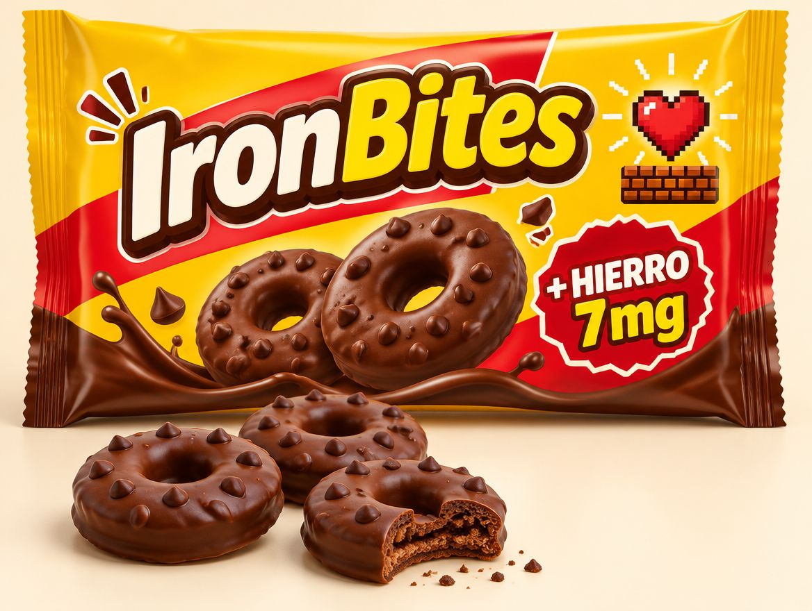

Semana 15 · Repaso
Plan de comunicaciones integradas de principio a fin: el caso IronBites
El cierre del curso: recorremos el trabajo integrador completo de IronBites, del diagnóstico a la web, y lo que aprendimos al exponerlo.

Mix & Medios reúne todo el curso de comunicaciones de marketing en un blog: 26 entradas, un glosario de 139 términos, quizzes y un caso aplicado de principio a fin, IronBites.
Diez unidades del sílabo, cada una con sus entradas, ejemplos peruanos y un recuadro que muestra cómo lo aplicamos en IronBites. ¿No sabes por dónde empezar? Empieza por la semana 1.
Qué es comunicar, el ruido, las CIM y el mix promocional.

Valor, identidad y posicionamiento de marca.

KPI, brief, agencias y la Big Idea.

Objetivos, presupuesto, buyer persona y diferenciación.

Necesidades, momentos de la verdad y customer journey.

Televisión, radio, prensa, revistas y publicidad exterior.

Reputación, stakeholders, PENCILS e influencers.

Marketing directo, trade, guerrilla, promociones y CRM.

Web de marca, SEO, SEM y redes sociales.

Repasos del ciclo y el caso integrador IronBites.
Las imágenes son ilustrativas.
De la semana 15 hacia atrás.
El cierre del curso: recorremos el trabajo integrador completo de IronBites, del diagnóstico a la web, y lo que aprendimos al exponerlo.
Cómo invertir bien en redes: orgánico vs. pagado, Meta, TikTok y YouTube Ads, seis objetivos, públicos, presupuesto de S/ 280, remarketing, métricas y la Biblioteca de Anuncios.
El algoritmo como DJ, qué red sirve para qué y cómo planear contenido orgánico: cuatro pilares, formatos, gancho-valor-CTA, calendario, creadores, UGC y métricas.
SEO vs. SEM, la subasta de Google (puja más calidad), la anatomía del anuncio de búsqueda y las métricas en soles, con un ejemplo de S/ 300 y el taller del curso.
Cómo decide Google qué mostrar, qué buscan las personas y cómo una marca nueva puede aparecer sin pagar: palabras clave, artículo SEO y Perfil de Empresa.
Inicio, Producto, Categorías y Blog: qué hace cada página, las cinco reglas de oro, cómo leer Google Analytics en cuatro números y cómo armar la web en Google Sites.
Un ejemplo de principio a fin: la galleta de Pícaras con hierro. Cada tema del curso se aplica a IronBites, desde el FODA hasta el spot, las relaciones públicas y la web.

Haz clic en una entrada para ir directo al tema de esa semana.
¿Tienes examen o exposición? Busca el tema que necesitas y llega con los conceptos claros. Cada entrada termina con un quiz de tres preguntas.